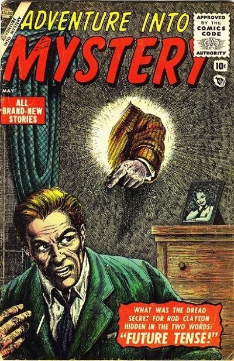

Adventure Into Mystery

Series: 8 issues
Publisher: 1956 -1957 Atlas, Marvel
About: SF/Horror anthology. This series was one of eight SF anthologies launched or revived in an eight-month period (cover dates October 1955–June 1956), increasing Atlas's SF line from eight to sixteen books. This book ran until the collapse of Atlas's distributor and the subsequent restructuring known as the "Atlas Implosion".
Issue#1:
- Future...Tense! Cover by John Forte, inks by Bill Everett, art by Bob Forgione.
- The Dark Side of the Moon!, art by Bob Powell
Scientists bounce a radar beam off the moon, "man's first contact in outer space!" (this had already been done in January 1946, by the US Army Signal Corps' Project Diana).
- To the Sea! text story.
- The Conquerors, art by John Forte. The Dream Creatures, art by Kurt Schaffenberger.
- Where the Grass Is Always Greener, art by Tony Mortellaro. Inside the Iceberg, art by Manny Stallman.